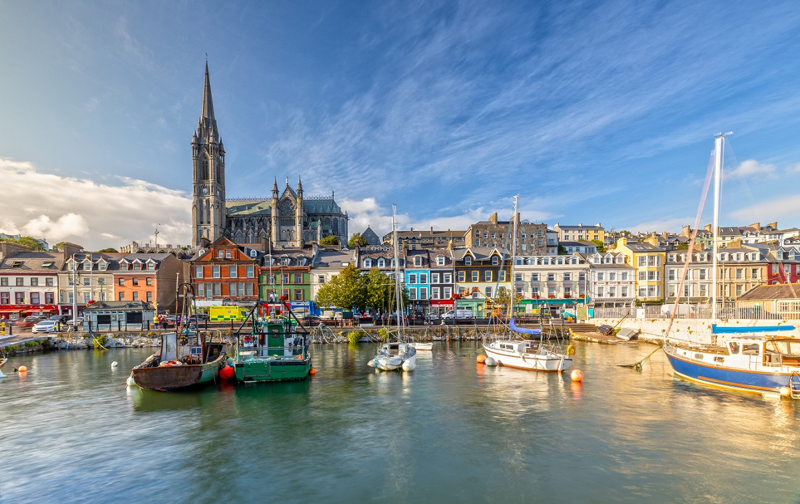

Descoperă Cork - O călătorie în cel mai mare oraș din sudul Irlandei
Cork este un oraș vibrant din sudul Irlandei, oferind o gamă variată de atracții pentru vizitatori:
-

Castelul Blarney - Legendă și farmec
Celebra piatră Blarney Stone este aici, oferindu-vă abilitatea de a câștiga vorbirea elocventă.
-

Catedrala St. Fin Barre - Arhitectură sacrală
Această catedrală impresionantă oferă o incursiune în istoria și spiritualitatea orașului.
-

Galeria de Artă Crawford - Artă și cultură
Aici puteți explora o colecție impresionantă de artă irlandeză și internațională.
-

Piața English Market - Bucătărie locală
O piață tradițională cu produse locale, delicatese și multe opțiuni pentru mâncare proaspătă.
-

Râul Lee - Plimbare liniștită
Malurile râului oferă o oportunitate de relaxare, plimbări și priveliști frumoase.
Concluzii
Cork combină istoria bogată cu atmosfera contemporană, oferind o experiență autentică a sudului Irlandei.